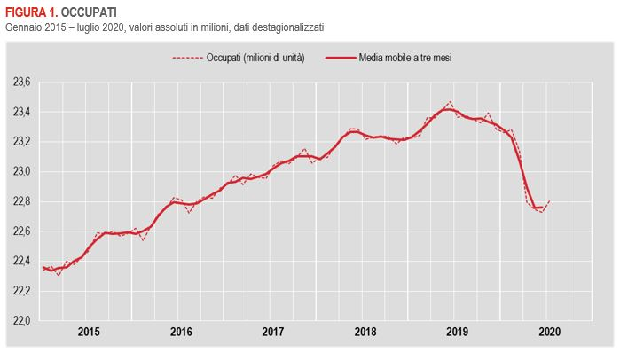

Con l'espressione disoccupazione giovanile ci si riferisce a quei ragazzi che non studiano e non lavorano. Secondo i dati raccolti nel rapporto ISTAT sui
livelli di istruzione in Italia, il tasso di giovani fra 15 e 29 anni inattivi corrisponde al 22,2%, con circa 2 milioni di persone coinvolte e, a causa dell'epidemia
che ha colpito il mondo intero, la percentuale non accenna a diminuire ma al contrario tende ad aumentare.
Considerando invece i ragazzi fra i 15 ed i 24 anni, che sono quelli per
convenzione considerati nei dati ufficiali sulla disoccupazione giovanile, il quadro peggiora.
L’Italia, in questo indicatore, arriva oltre il 30%.
La mancanza di prospettive e lunghi periodi di disoccupazione portano a maggiore possibilità di essere disoccupati più avanti e peggiorano le probabilità di carriera.
Lasciare indietro i giovani, i più colpiti dalle crisi economiche, non vuole solo dire creare isolamento ed esclusione sociale, dipendenza e mancanza di stima, ma
comporta anche risultati negativi per l’economia e per le società che invecchiano sempre di più.
